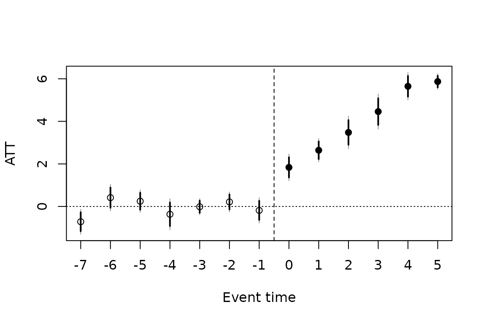

Policy evaluation: DiD, event studies and staggered adoption
Source:vignettes/panglm-policy.Rmd
panglm-policy.RmdHealth policies are often evaluated by comparing the change in an outcome among the units exposed to a policy with the change among units not exposed: difference-in-differences (DiD). This vignette covers:
| Design | Tool |
|---|---|
| One adoption date, average effect |
did(), two-way fixed effects (TWFE) |
| One adoption date, effect over time and pre-trends | eventstudy() |
| Staggered adoption, heterogeneous effects |
attgt() (Callaway and Sant’Anna 2021) or
etwfe() (Wooldridge 2021, 2023) |
All functions take the data in long format,
index = c(unit, time) with a numeric time, and
treat, the name of a column holding each unit’s first
treated period (NA, 0 or Inf for
never treated). The examples use small simulated panels and 199
bootstrap draws; the companion book uses real data and more draws.
One adoption date: did() and
eventstudy()
Half of 200 practices adopt a care pathway in 2019. Visits follow a common upward trend, and the pathway adds 1 visit at adoption and 0.3 more for each year after it.
set.seed(1)
d <- expand.grid(id = 1:200, year = 2015:2022)
d$first <- ifelse(d$id <= 100, 2019, NA)
a <- rnorm(200)
e <- d$year - d$first
post <- !is.na(e) & e >= 0
d$visits <- 3 + a[d$id] + 0.1 * (d$year - 2015) +
ifelse(post, 1 + 0.3 * e, 0) + rnorm(nrow(d))
d$admitted <- rbinom(nrow(d), 1, plogis(-1 + a[d$id] +
0.05 * (d$year - 2015) + 0.8 * post))did() adds the indicator of being treated,
1(t >= first), to a model with unit and year fixed
effects. With a single adoption date its coefficient is the average
treatment effect on the treated (ATT) under parallel trends.
fit <- did(visits ~ 1, data = d, index = c("id", "year"), treat = "first")
coef(fit)
#> treated
#> 1.664368
confint(fit)
#> 2.5 % 97.5 %
#> treated 1.471 1.857735The pathway adds about 1.7 visits per year on average over the four
post-adoption years (true value 1.45). For a binary outcome,
family = "binomial" fits a conditional (fixed-effects)
logit with year effects, so the coefficient is a log odds ratio;
"poisson" and "negbin" are available for
counts.
fitb <- did(admitted ~ 1, data = d, index = c("id", "year"),
treat = "first", family = "binomial")
#> 16 group(s) with no within-group outcome variation dropped (all-0 or all-1) -- they carry no information for the conditional likelihood.
exp(cbind(OR = coef(fitb), confint(fitb)))
#> OR 2.5 % 97.5 %
#> treated 2.020067 1.300451 3.137888The odds of an admission double after adoption (true odds ratio ). Practices that are never or always admitted carry no information in the conditional likelihood and are dropped.
eventstudy() replaces the single indicator by one
indicator per year relative to adoption, with the year before adoption
as reference. The leads (negative event times) test parallel pre-trends;
the lags trace the effect over time.
es <- eventstudy(visits ~ 1, data = d, index = c("id", "year"),
treat = "first", leads = 4, lags = 3)
es
#>
#> Event study (two-way fixed effects, gaussian)
#> N = 1600 groups = 200 vcov: cluster
#> Reference event time: -1 (end points binned)
#>
#> event estimate se lower upper
#> -4 -0.0279406 0.2023 -0.4245 0.3686
#> -3 -0.0006271 0.2125 -0.4170 0.4158
#> -2 -0.2058470 0.2117 -0.6209 0.2092
#> -1 0.0000000 0.0000 0.0000 0.0000
#> 0 1.1355992 0.2152 0.7139 1.5573
#> 1 1.7096956 0.2064 1.3051 2.1143
#> 2 1.6908680 0.1949 1.3089 2.0728
#> 3 1.8868941 0.2176 1.4604 2.3134
#>
#> Pre-trend test: Chi-squared = 1.248, df = 3, p-value = 0.7414
plot(es)The leads are close to zero and jointly not significant (p = 0.74); the effect rises from about 1.1 at adoption to about 1.9 three years later. A non-significant pre-trend test is not proof of parallel trends: it has limited power (Roth 2022).
Why TWFE fails under staggered adoption
When units adopt at different dates and the effect changes with time
since adoption, the TWFE coefficient of did() is a weighted
average of all two-by-two comparisons, including “forbidden” ones in
which units treated earlier serve as controls for units treated later.
Their growing effects are then subtracted, and some weights can be
negative (Goodman-Bacon 2021; de Chaisemartin and D’Haultfoeuille 2020).
The estimate can be far from any meaningful average, even with the wrong
sign.
We simulate 120 provinces joining an insurance scheme in 2016, 2018 or 2020, or not by 2021. The effect on outpatient visits is 2 at adoption and grows by 1 per year.
set.seed(1)
s <- expand.grid(province = 1:120, year = 2012:2021)
s$adoption <- rep(c(2016, 2018, 2020, NA), each = 30)[s$province]
s$urban <- rep(runif(120), 10)[s$province]
s$pop <- rep(round(runif(120, 50, 500)), 10)[s$province]
s$region <- ceiling(s$province / 10)
a <- rnorm(120)
e <- s$year - s$adoption
post <- !is.na(e) & e >= 0
s$visits <- 50 + 5 * a[s$province] + 0.5 * (s$year - 2012) * (1 + s$urban) +
ifelse(post, 2 + e, 0) + rnorm(nrow(s))
# true ATT averaged over the treated province-years
mean(2 + e[post])
#> [1] 3.833333
coef(did(visits ~ 1, data = s, index = c("province", "year"),
treat = "adoption"))
#> treated
#> 2.620841TWFE gives 2.6 against a true average effect of 3.8: it understates the effect by about a third, and a bigger growth of the effect over time would make it worse.
Group-time effects: attgt()
The estimator of Callaway and Sant’Anna (2021) computes one ATT for
each adoption cohort
and period
,
ATT,
from a clean two-group, two-period comparison against units never
treated (or, with control = "notyet", not yet treated), and
then aggregates them.
cs <- attgt(visits ~ 1, data = s, index = c("province", "year"),
treat = "adoption")
head(cs$estimates)
#> group time event estimate se lower upper post
#> 1 2016 2013 -3 -0.2302130 0.3820818 -0.9790796 0.5186535 FALSE
#> 2 2016 2014 -2 0.1603968 0.4176862 -0.6582532 0.9790467 FALSE
#> 3 2016 2015 -1 0.1732645 0.4507239 -0.7101380 1.0566671 FALSE
#> 4 2016 2016 0 1.7558542 0.3824772 1.0062126 2.5054959 TRUE
#> 5 2016 2017 1 2.5772622 0.4272741 1.7398203 3.4147041 TRUE
#> 6 2016 2018 2 3.8892271 0.4413501 3.0241968 4.7542574 TRUE
summary(cs)
#>
#> Callaway and Sant'Anna group-time ATT, aggregated overall (simple weighted average)
#> Control group: never treated Estimator: unconditional Individuals: 120
#>
#> ATT: 3.541 (SE 0.217, 95% CI 3.116 to 3.967)
#>
#> Pre-trend test (pre-treatment ATT(g, t) = 0): Chi-squared = 15.03, df = 15, p-value = 0.4492The overall ATT (the average of the post-adoption
ATT
weighted by cohort size) is 3.5, and its confidence interval covers the
true 3.8. summary() gives the other aggregations:
"dynamic" (by time since adoption, an event study free of
the TWFE contamination), "group" (by cohort) and
"calendar" (by year).
summary(cs, type = "dynamic")
#>
#> Callaway and Sant'Anna group-time ATT, aggregated event study (by time since treatment)
#> Control group: never treated Estimator: unconditional Individuals: 120
#>
#> ATT (mean of e >= 0): 4.132 (SE 0.2421, 95% CI 3.658 to 4.607)
#>
#> event estimate se lower upper
#> -7 -0.53979 0.3783 -1.2813 0.2017
#> -6 0.10859 0.4021 -0.6794 0.8966
#> -5 0.05710 0.2816 -0.4949 0.6091
#> -4 -0.24877 0.2850 -0.8073 0.3098
#> -3 -0.08794 0.2102 -0.5000 0.3241
#> -2 0.27922 0.2095 -0.1314 0.6898
#> -1 -0.18785 0.2265 -0.6317 0.2561
#> 0 2.08168 0.2072 1.6755 2.4879
#> 1 2.58922 0.1809 2.2346 2.9438
#> 2 3.84201 0.3079 3.2386 4.4454
#> 3 4.52044 0.3047 3.9233 5.1176
#> 4 5.85395 0.4155 5.0395 6.6684
#> 5 5.90549 0.4358 5.0514 6.7596
#>
#> Pre-trend test (pre-treatment ATT(g, t) = 0): Chi-squared = 15.03, df = 15, p-value = 0.4492
summary(cs, type = "group")$estimates
#> level estimate se lower upper
#> 1 2016 4.136100 0.3305989 3.488138 4.784062
#> 2 2018 3.125690 0.3416616 2.456046 3.795335
#> 3 2020 2.588851 0.2997582 2.001336 3.176366The event study is flat before adoption and rises after it, from about 2 at adoption to about 6 five years later, as simulated. The early cohort gains most because it has been exposed longest.
With covariates, parallel trends holds conditionally on their
baseline values; method = "dr" (the default) is doubly
robust (Sant’Anna and Zhao 2020). weights takes sampling or
population weights, constant within unit. The multiplier bootstrap
(bstrap = TRUE) allows clustering at a coarser level, and
cband = TRUE adds uniform confidence bands, which cover all
event times jointly.
csb <- attgt(visits ~ urban, data = s, index = c("province", "year"),
treat = "adoption", control = "notyet", weights = "pop",
cluster = "region", cband = TRUE, biters = 199, seed = 1)
summary(csb, type = "dynamic", min_e = -3)
#>
#> Callaway and Sant'Anna group-time ATT, aggregated event study (by time since treatment)
#> Control group: not yet treated Estimator: DR Individuals: 120
#>
#> Bootstrap standard errors (rademacher, 199 draws); uniform bands with critical value 2.465
#> ATT (mean of e >= 0): 3.989 (SE 0.1679, 95% CI 3.66 to 4.318)
#>
#> event estimate se lower upper band_lower band_upper
#> -3 -0.01448 0.1474 -0.3034 0.2745 -0.3778 0.3489
#> -2 0.21343 0.1799 -0.1392 0.5661 -0.2300 0.6569
#> -1 -0.18533 0.2296 -0.6353 0.2646 -0.7512 0.3805
#> 0 1.83664 0.2433 1.3598 2.3134 1.2370 2.4362
#> 1 2.64136 0.2117 2.2264 3.0563 2.1196 3.1632
#> 2 3.47801 0.2963 2.8974 4.0587 2.7478 4.2082
#> 3 4.45831 0.3205 3.8301 5.0865 3.6684 5.2483
#> 4 5.64754 0.2488 5.1599 6.1352 5.0343 6.2608
#> 5 5.87030 0.1397 5.5966 6.1440 5.5261 6.2145
plot(csb)
The uniform bands (grey) are wider than the pointwise intervals; use them to judge the whole event-time profile at once.
Extended TWFE: etwfe()
The extended TWFE estimator of Wooldridge (2021) keeps the regression
framework but interacts the treatment with every cohort by period cell,
so each cohort has its own effect in each period and no forbidden
comparison is made. In the linear case it is equivalent to an imputation
estimator. ivar = TRUE replaces the cohort effects by unit
effects (linear model only), which gives the same ATT in a balanced
panel.
et <- etwfe(visits ~ urban, data = s, index = c("province", "year"),
treat = "adoption")
summary(et, type = "event")
#>
#> Extended TWFE (Wooldridge), linear model, control group: not yet treated
#> Observations: 1200 Individuals: 120 vcov: cluster
#> Fixed effects: cohort and period
#>
#> ATT (response scale): 3.568 (SE 0.122, 95% CI 3.329 to 3.807, p = < 2.2e-16)
#>
#> event estimate se statistic p.value lower upper
#> 0 1.970 0.1589 12.40 2.763e-35 1.658 2.281
#> 1 2.585 0.1382 18.71 4.487e-78 2.314 2.856
#> 2 3.817 0.2163 17.65 1.049e-69 3.393 4.240
#> 3 4.696 0.1783 26.34 6.889e-153 4.346 5.045
#> 4 6.035 0.2910 20.74 1.460e-95 5.465 6.605
#> 5 6.090 0.2502 24.34 7.140e-131 5.600 6.580
summary(etwfe(visits ~ urban, data = s, index = c("province", "year"),
treat = "adoption", ivar = TRUE))$overall
#> estimate se statistic p.value lower upper
#> 1 3.567819 0.121597 29.34134 3.082108e-189 3.329494 3.806145The overall ATT is 3.6 and the event-time profile matches that of
attgt(). Its main advantage is for counts and binary
outcomes (Wooldridge 2023): with family = "poisson" or
"binomial", parallel trends is assumed on the link scale,
which respects the nature of the outcome, and the effects are reported
on the response scale. xvar estimates separate effects by a
covariate.
s$admissions <- rpois(nrow(s), exp(1 + 0.3 * a[s$province] +
0.03 * (s$year - 2012) + 0.2 * post))
s$rural <- as.numeric(s$urban < 0.5)
etp <- etwfe(admissions ~ 1, data = s, index = c("province", "year"),
treat = "adoption", family = "poisson", xvar = "rural")
summary(etp)
#>
#> Extended TWFE (Wooldridge), Poisson model, control group: not yet treated
#> Observations: 1200 Individuals: 120 vcov: cluster
#> Fixed effects: cohort and period; effects by rural
#>
#> ATT (response scale): 0.891 (SE 0.2542, 95% CI 0.3929 to 1.389, p = 0.0004555)
#>
#> rural estimate se statistic p.value lower upper
#> 0 0.7738 0.3581 2.161 0.030708 0.07194 1.476
#> 1 0.9983 0.3763 2.653 0.007974 0.26081 1.736The scheme adds about 0.9 admissions per province-year, with similar effects in rural and urban provinces.
References
Callaway, B., and Sant’Anna, P. H. C. (2021). Difference-in-differences with multiple time periods. Journal of Econometrics, 225, 200-230.
de Chaisemartin, C., and D’Haultfoeuille, X. (2020). Two-way fixed effects estimators with heterogeneous treatment effects. American Economic Review, 110, 2964-2996.
Goodman-Bacon, A. (2021). Difference-in-differences with variation in treatment timing. Journal of Econometrics, 225, 254-277.
Roth, J. (2022). Pretest with caution: event-study estimates after testing for parallel trends. American Economic Review: Insights, 4, 305-322.
Sant’Anna, P. H. C., and Zhao, J. (2020). Doubly robust difference-in-differences estimators. Journal of Econometrics, 219, 101-122.
Wooldridge, J. M. (2021). Two-way fixed effects, the two-way Mundlak regression, and difference-in-differences estimators. Working paper, SSRN 3906345.
Wooldridge, J. M. (2023). Simple approaches to nonlinear difference-in-differences with panel data. The Econometrics Journal, 26, C31-C66.